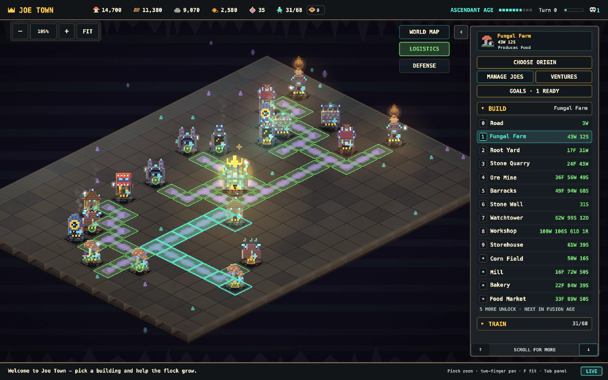
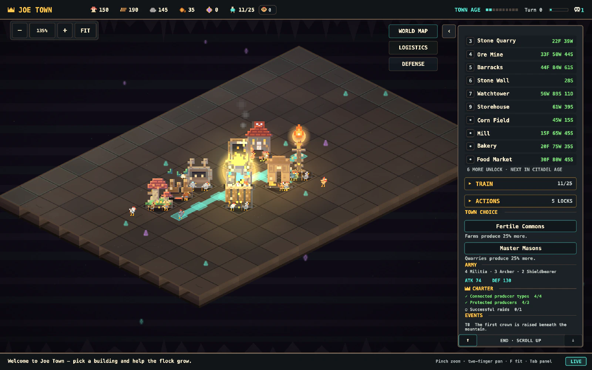
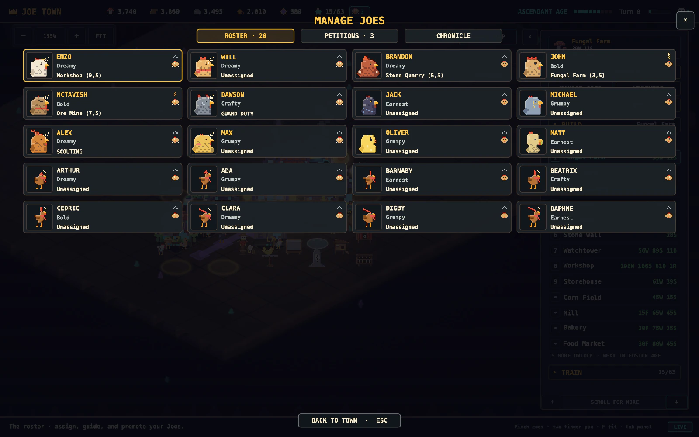
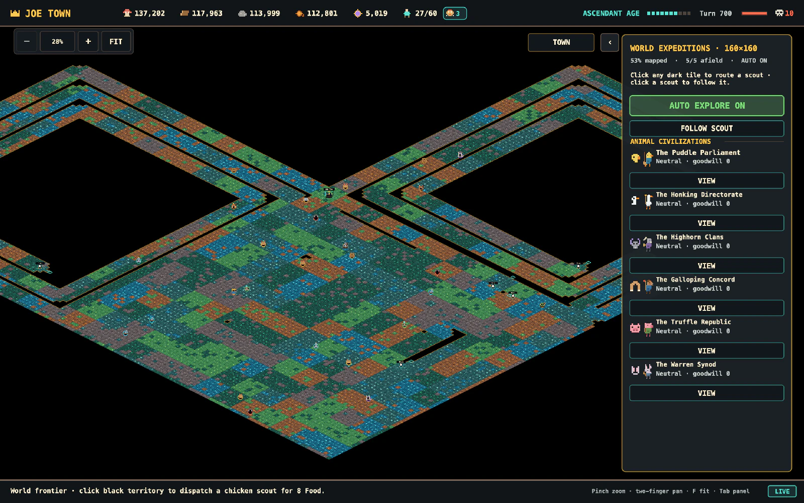
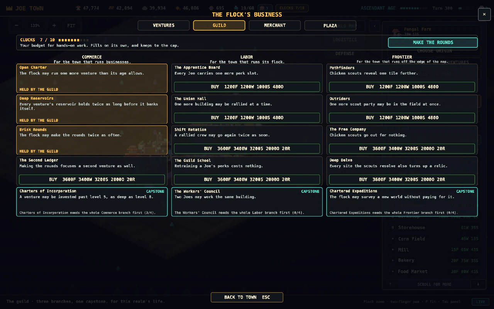
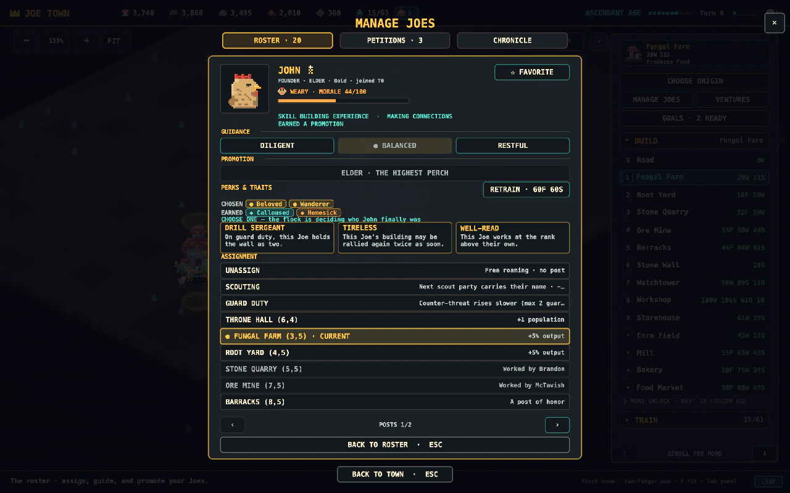
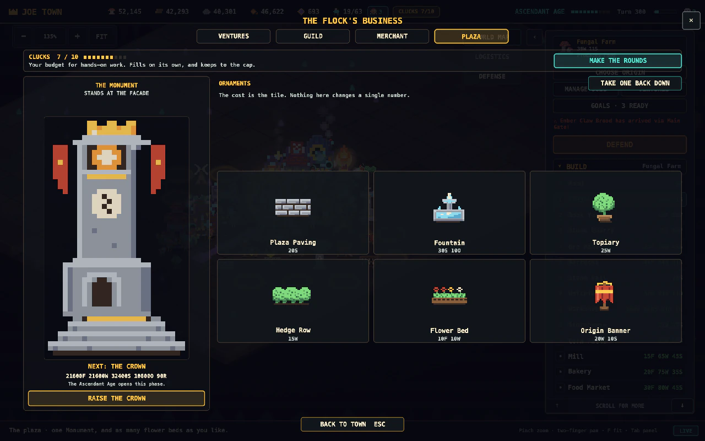
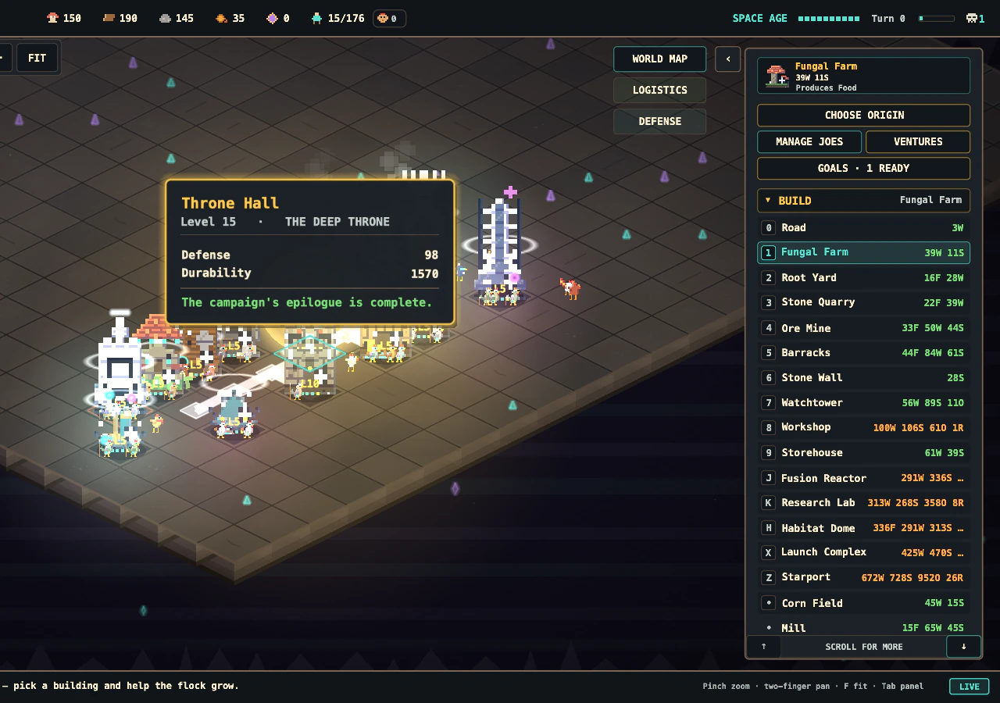

Talon Banner
“Peace through pecking order.”
Cheaper soldiers, richer raids, and diplomats famous for carrying banners into other towns and leaving with the grain.

The Light Update
Build a chicken civilization from campfire to starlight. They handle the pecking. You handle the plan.
Same town · five hours
Light moves across the plateau on the town’s own clock. Dawn cools the stone, dusk warms the windows, and a saved town reloads at exactly the hour you left it.

Inside the latest build
Open a frame for a closer look at the current town, its petitions, ventures, neighbors, diplomacy, and named Joes. Every image comes from the current Mac build, with staged sample data where needed.
Select any frame to inspect it full size.
Ten ages · one cavern


CAMP · TOWN · CITADEL · CROWN · KINGDOM · EMPIRE · ASCENDANT · FUSION · ORBITAL · SPACE


Five flocks, five paths

“Peace through pecking order.”
Cheaper soldiers, richer raids, and diplomats famous for carrying banners into other towns and leaving with the grain.
“Read the omens in every molted feather.”
Consults the moon before breakfast. The moon has surprisingly firm opinions about zoning.
“Measure twice, cluck once.”
Machines that run beautifully, provided nobody asks which gear is load-bearing.
“Every sunrise is a market opening.”
Discovered that grain left alone becomes more grain. Naps professionally — the ledger keeps counting either way.
“A calm roost weathers every storm.”
Holds that most wars end the moment somebody finally shares the snacks. Their enemies leave confused and faintly blessed.
Each origin owns one core system and one unique building, and you choose once per town. The town spends the rest of history being that town.
 EDITORIAL KEY ART · NOT GAMEPLAY
EDITORIAL KEY ART · NOT GAMEPLAY
The flock has names
John, Alex, Dawson, and Matt are four of the twelve founders. They pick up skills, ranks, friendships, and earned traits as the town grows — no two saves agree on who’s in charge. Today, for example:
Bold · Farming today, audibly
Dreamy · Out scouting a promising rock
Crafty · Studying; the footnotes have footnotes
Earnest · Newly promoted; everyone has heard
Our spreadsheet has feathers.
The suggestion box got an upgrade
Named Joes bring the town’s business to your desk — specific, sincere, and slightly absurd. Approve one and the town builds the spa, funds the dig, or settles the feud over a shared meal. Declining costs nothing. Nothing in Joe Town punishes you for saying “not yet.”

“Six worms run the entire under-soil trade. We buy in now, or we buy in later at their price.”
“There’s a hole behind the quarry. It was not there yesterday. I want it on the record.”
“The wind is right there, doing nothing at all. Let’s put it on the payroll.”
“Small wooden chickens, enormous wooden feelings. The roost is ready for a theatre.”
26 petition archetypes. Statues, spas, bell towers, libraries — and one Monument raised in four phases across the ages.
The city is the hero
A physical production chain
Roads are supply lines, not decoration. Named Joes carry each resource tile by tile, and the Logistics view shows exactly where a stalled route needs your attention.


Watch real cargo roll

Choose once, live with it

A flock with opinions

See what the geese are up to
Build 24 buildings, wire them together with visible supply lines, and commit to permanent choices across 18 technologies. Step away and the flock keeps working; come back and the town files a full report. A recent one: “Everything grew; nothing exploded. Probably.”
Choices that reshape the town
Lift a lasting restriction through the guild, shape a Joe with chosen perks and earned traits, then raise one Monument across four age-gated phases. These are not menu flourishes. They change how this town grows.



Joe Town Foundry · Watchtower study
The Foundry turns an approved design into a consistent eight-view production master. These square studies help the art team lock silhouette, materials, light, and attachment points before the final pixel sprites are baked.
Production art · not gameplayWork-in-progress art pipeline renders. Final in-game assets remain pixel art.
Select a view to inspect the square production render. The final SpriteKit game uses separately approved pixel-art bakes.
Beyond the cavern
Send named scouts into the dark and chart a world that grows with every age. Out there: landmarks that pay rent forever, monsters with territorial opinions, and thirteen animal civilizations that would like to discuss terms.
Ducks
“Cheerful navigators with suspiciously strong opinions.”
Geese
“Fearless diplomats who consider volume a negotiating skill.”
Pigs
“Inventive traders who prize clever bargains.”
Rabbits
“Fast-growing scholars with an excellent tunnel network.”
Turkeys
“Ceremonial strategists who never enter a room quietly.”
Llamas
“Starward weavers with calm manners and improbable engines.”
Send envoys, sign trade pacts, host festivals, or demand tribute — each civilization has a temperament, and a Proud one goes to war over an insult a Gentle one shrugs off. Seven more nations wait past the fog, each with a capital, a favored resource, and a price.

Defense is a puzzle. Raids are scouting problems.
Scout a rival and the report writes your battle plan: which gate is weak, which is guarded, what’s worth carrying home. Pick an entry, an objective, and how much of the army to commit — then watch it play out on seeded dice.


The coopconomy
Found ventures that run themselves and pay in full whether you visit or not — the Market Stall fills in about twenty minutes, the Starship Prospectors in two days. Make the rounds when you’re ready and the business you focus pays a bonus. Everything banks at full value and stays yours. Forever.
A traveling merchant rotates one-of-a-kind artifacts through town. Most do something remarkable. One is the Unremarkable Egg: “It is an egg. Nothing happens. The flock is very proud of it.” It still costs 120 food and 60 wood.

Leave. It’s fine.
Close the lid mid-shift and the flock keeps working. Come back in an hour or a week and the town hands you a Welcome Back report — production, arrivals, and anything waiting at the gate. Raids never resolve without you: “the walls will hold until you’re ready to answer.”
All of it lands in the Flock Chronicle — major events, Notable Joes, and the running history of a town that remembers whose idea the hole was.
A campaign with a crown
Completing the Space Legacy seals the campaign, but it does not end the town. Five feat-gated Deep Throne levels turn the epilogue into a record of everything your empire mastered.
Play completely offline. No ads. No in-app purchases. One town can become a very long story.


The practical matters

A native Mac city builder and simulation. Paint roads, tune production, make permanent technology choices, and keep an eye on the neighbors — the ducks have a parliament, and the geese consider volume a negotiating skill.
Yes. One purchase includes all ten ages, 24 buildings, 18 technologies, the named Joes, and local saves. No ads, no in-app purchases, no gameplay tracking. As the flock puts it: “Hoarding, but civic-minded.”
No. The town-defining choices wait for you. Offline progress is bounded and arrives as a tidy summary — no streaks, no energy meters, no login rewards, no guilt. The chickens simply kept busy.
Entirely. Joe Town saves locally and plays with the internet off. When you return, the town reports in — usually something like “Productivity occurred without supervision.”
macOS 14 or later, on Apple silicon or Intel — one native universal Mac app. The chickens cannot tell which chip you have and are at peace with that.
No two are. Worlds are seeded, the twelve founders take their seats in a different order every game, and towns diverge by what their Joes asked for. Two towns at the same age can disagree about nearly everything, including the theatre.
The Mac game does not collect gameplay or account data. This website uses Google Analytics to understand aggregate visits — see the privacy notice. The only census in Joe Town counts chickens, and it lists eggs as residents, pending.
 EDITORIAL KEY ART · NOT GAMEPLAY
EDITORIAL KEY ART · NOT GAMEPLAY
PLAY OFFLINE · NO ADS · NO IN-APP PURCHASES · NO GAMEPLAY TRACKING